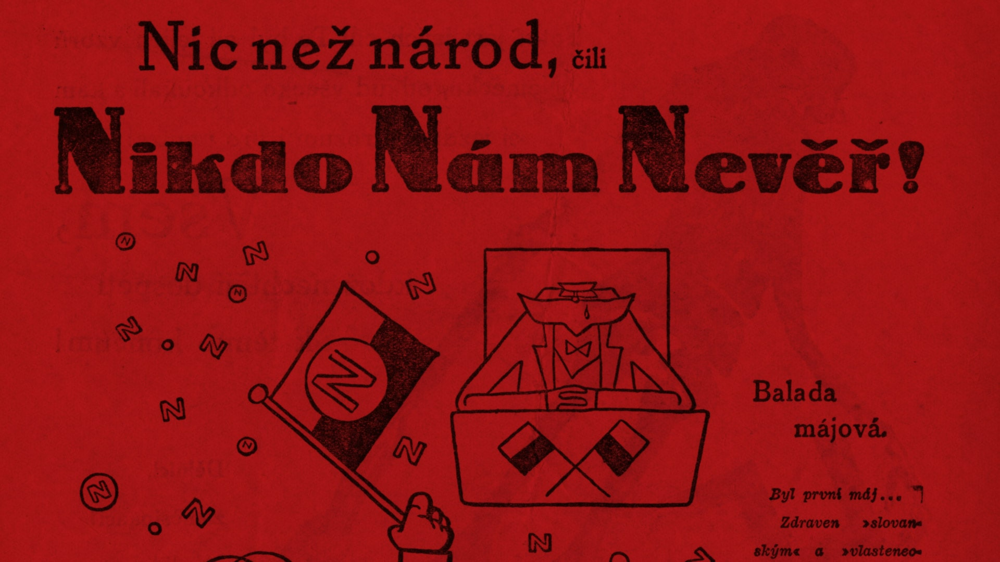
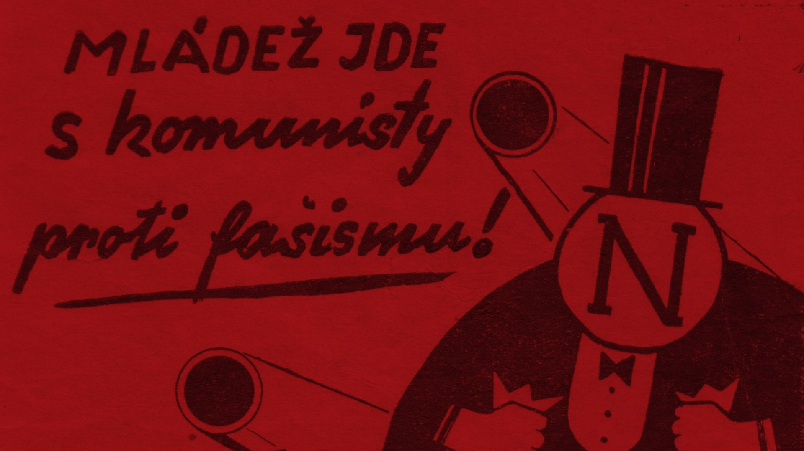
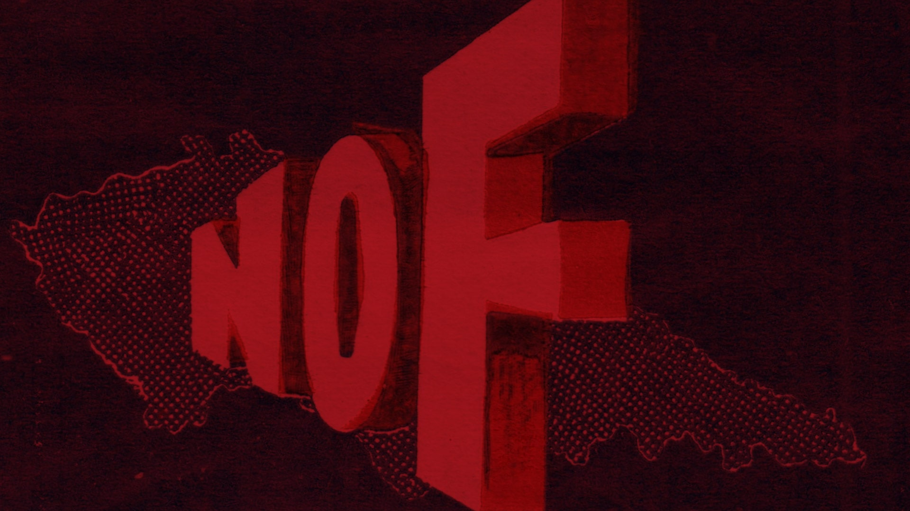
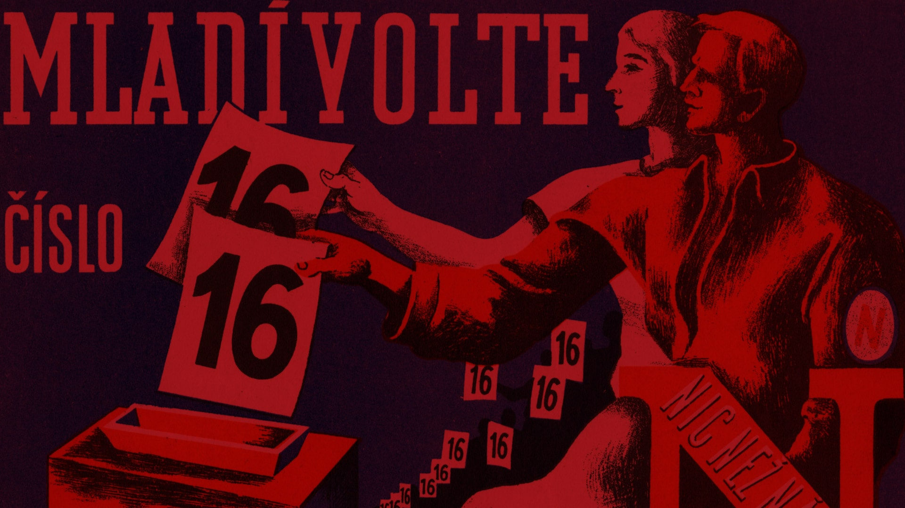
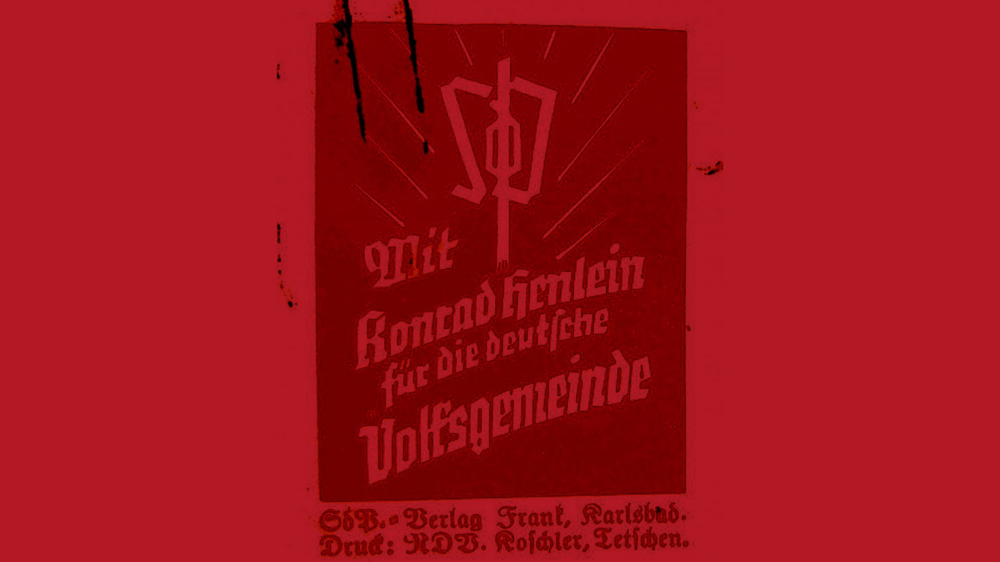
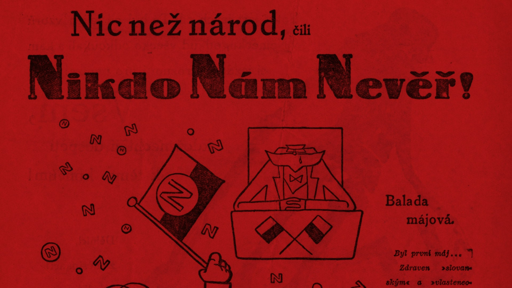
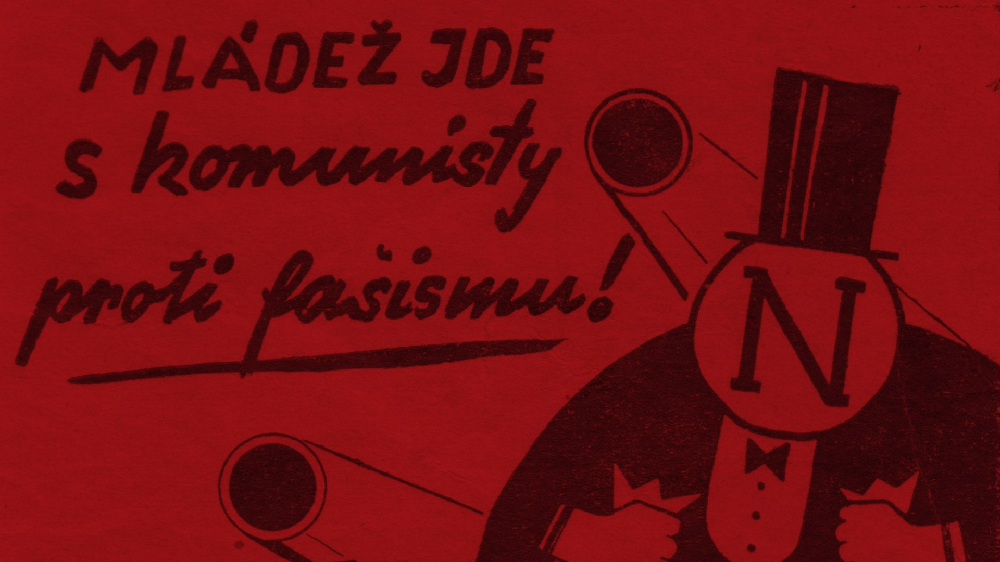
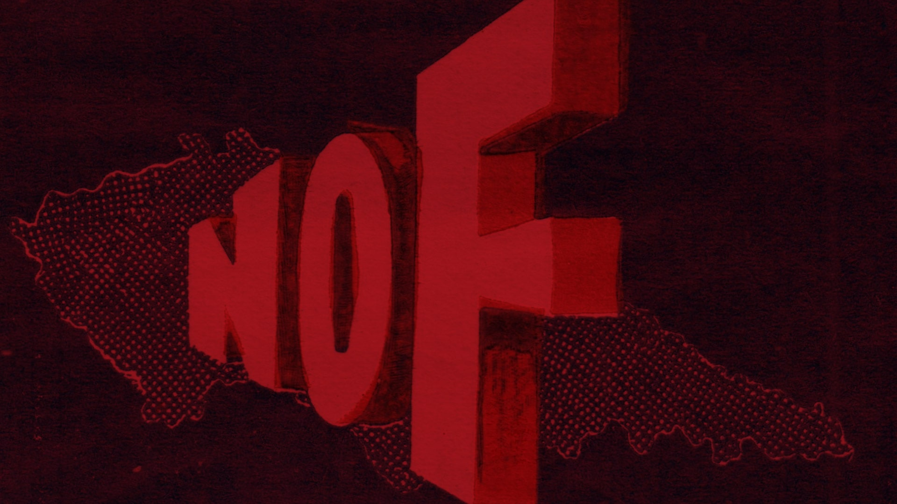
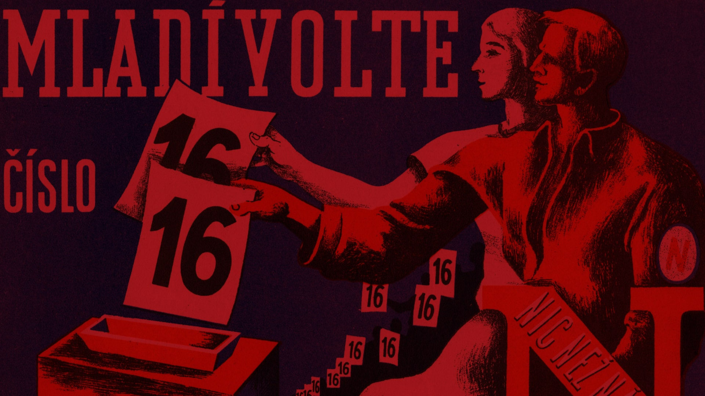
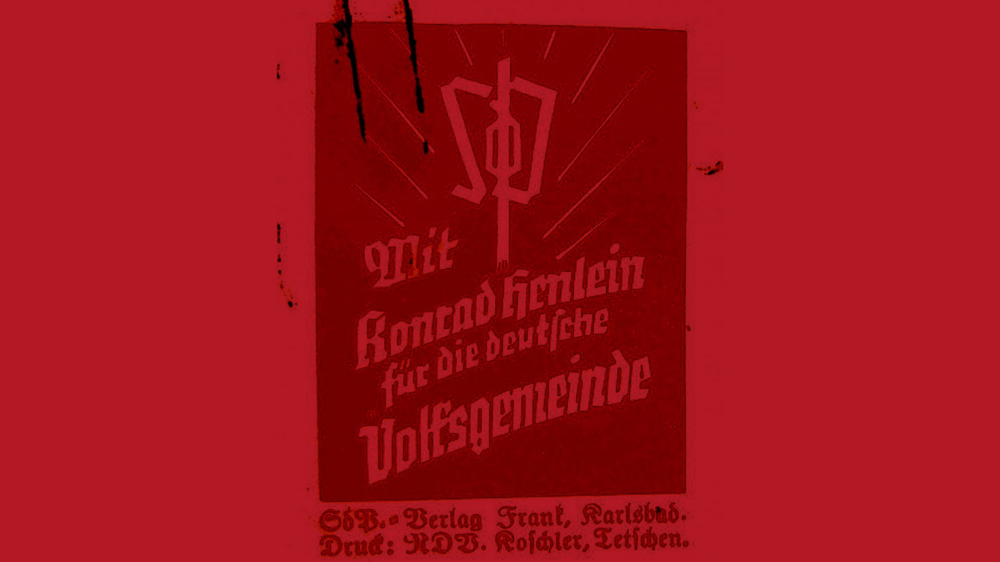

Yes
No
Choice 3
Choice 4
Choice 5
92.8% of voters took part in the elections.
Despite the poll results, Konrad Heinlein’s SDP became the absolute winner.
The party gained 1.25 million voters or 15.2% of the total.
The Agrarians were second and, due to the different weight of votes, they gained one more seat, although a significantly lower number of people voted for them.
Most of their voters were from the eastern part of Czechoslovakia.
ČSSD was third and the results were disappointing for the party. The Czechoslovak Fascist Community was also disappointed with gaining only six seats.
The previous coalition resigned due to the elections, as it no longer had a majority.
A new group of seven parties and two non-partisans, the so-called broad coalition, was formed. It excluded the winner of the elections, the SDP. The Agrarian Jan Malypetr became the Prime Minister of the new government.
However, there was no peace on the political scene. Until 1938, five different governments were subsequently in power, the last one being a caretaker government. In the same year, the borderlands of Czechoslovakia were ceded to Germany.
The Czechoslovak Republic disappeared for several years.